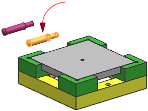
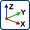

移动一个定位销
您将显示 des03_tool_locator_pin 组件并将它们移动到 des03_tool_baseplate 上的定位孔中，您将使用碰撞检测选项。
-
在装配导航器中，选中des03_tool_locator_pin 组件节点的复选框。

-
选择其中一个定位销。

-
在移动组件对话框中的设置组，在碰撞检测下方，从碰撞动作列表中选择高亮显示碰撞。
-
从检查模式列表中，选择小平面/实体。
-
在变换组中，从运动列表中选择动态。
-
点击指定方位 。
-
选择 YC 平移手柄。

-
选择如图所示的底座孔的面。

des03_tool_locator_pin 被定向到了孔轴的方向。

-
使用点到点选项完成移动。
des03_tool_workpiece 组件和 des03_tool_locator_pin 组件发生干涉。

-
在碰撞检测下方，点击认可碰撞 。